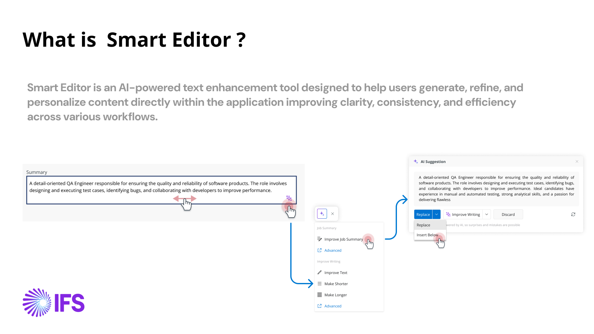
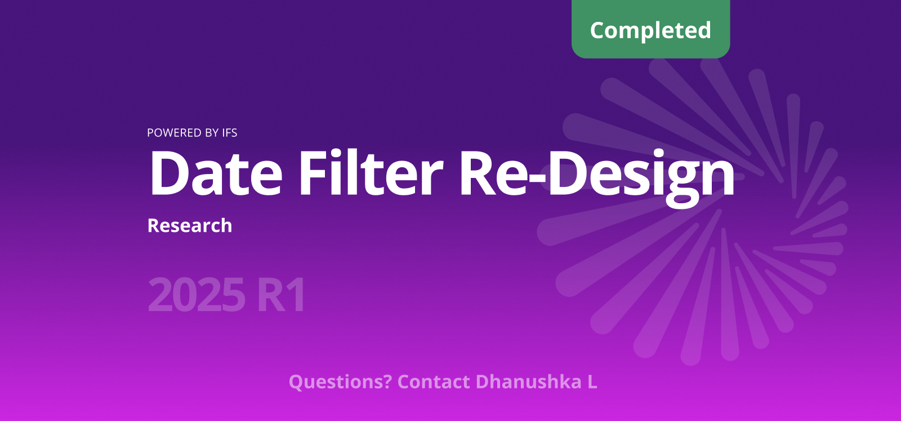

Work
A few problems I've helped teams solve.
Each case study walks through the context, the messy middle, and what shipped. Names and numbers are placeholders until you swap in your own.
IFS Cloud · AI · Lead designer
Smart Editor: AI writing help, built once and used everywhere
An AI writing assistant added to IFS Cloud's central framework, so HCM, finance, supply chain and project teams can generate, rewrite and summarise text in their own screens.

IFS · Research & redesign
Date Filter Re-Design
A research-led rework of the date filter used on nearly every list and report in IFS Cloud. Shipped in the 2025 R1 release.

Retail Co · 0→1
Empowering item discovery with Gen AI summaries
Co-led design for an AI summary module that distills reviews and specs into a scannable answer, helping shoppers decide faster.
SaaS Platform · Full redesign
Rebuilding onboarding to get teams to value on day one
Reframed a 14-step setup wizard as a guided, skippable checklist tied to real activation moments across web and mobile.
Internal · Platform
Founding a design system three squads actually use
Built the component library, contribution model, and docs that cut design-to-dev handoff time and unified a fragmented UI.